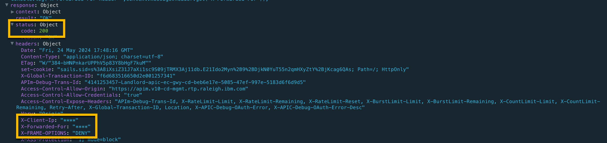
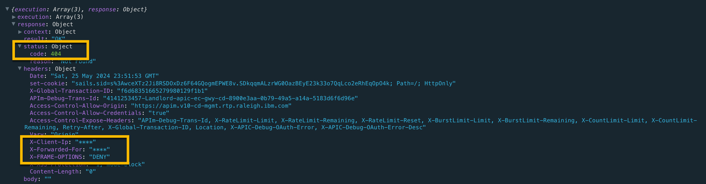

Global Error Policy: Mask Sensitive Data¶
Sila Kissuu
© IBM v0.1 2024-05-24
We demonstrate how to create and designate a global error policy. In this policy we mask the IP address returned in the X-Client-Ip response header.
PROCEDURE¶
-
Create a global policy yaml file.
Contents of the global_error_policy.yaml used in this document:
global-policy: 1.0.0 info: name: mask-ip-error-policy title: Mask IP Error Policy version: 2.0.0 gateways: - datapower-api-gateway assembly: catch: - errors: - AssemblyRateLimitError - RuntimeError execute: - log: title: log log-level: default mode: gather-only version: 2.1.0 - default: - log: title: log log-level: default mode: gather-only version: 2.1.0 finally: - gatewayscript: version: 2.0.0 title: Mask IP Address source: >- context.message.header.set('X-Client-Ip','****'); context.message.header.set('X-Forwarded-For','****'); context.message.header.set('X-FRAME-OPTIONS','DENY'); context.message.header.set('X-XSS-Protection','1; mode=block'); console.log('x-client-ip header=',context.message.header.get('X-Client-Ip')); console.log('X-Forwarded-For header=',context.message.header.get('X-Forwarded-For')); -
Login to the Management server using the provider realm.
apic login --server mgmt_endpoint_url --username user_id --password password --realm provider/identity_provider -
Upload the global error policy to a gateway service.
apic global-policies:create --catalog sandbox --configured-gateway-service yourGwyService --org yourOrg --server platformEndpointUrl --scope catalog global_error_policy.yamlResponse:
mask-ip-error-policy:2.0.0 https://platform.v10-cd-mgmt.rtp.raleigh.ibm.com/api/catalogs/86441fe3-dfed-4fe6-99ef-6153b0d14afe/7335a813-3082-4c98-998b-a40ebea70abb/configured-gateway-services/9acd7b0a-bc2f-4ace-b3b7-9223e7f91db4/global-policies/7a392a17-a84a-4858-9409-4738c774cfe6
NOTE: If your yaml is not structured correctly - for example, you used tabs for indentation instead of spaces - you might encounter an error such as this one:
VERIFICATION¶
-
Verify that the global policy has been successfully uploaded to the gateway service.
apic global-policies:list-all --catalog sandbox --configured-gateway-service yourGwyService --org yourOrg --server platformEndpointUrl --scope catalogResponse:
-
Designate the global error policy for the gateway service.
- Retrieve the URL of the policy.
apic global-policies:get --catalog sandbox --configured-gateway-service yourGwyService --org yourOrg --server platformEndpointUrl --scope catalog mask-ip-error-policy:2.0.0 --fields url
Response:
GlobalPolicy GlobalPolicy.yaml https://platform.v10-cd-mgmt.rtp.raleigh.ibm.com/api/catalogs/86441fe3-dfed-4fe6-99ef-6153b0d14afe/7335a813-3082-4c98-998b-a40ebea70abb/configured-gateway-services/9acd7b0a-bc2f-4ace-b3b7-9223e7f91db4/global-policies/7a392a17-a84a-4858-9409-4738c774cfe6The retrieved URL is witten to a file named `GlobalPolicy.yaml` in the current working directory.- Edit the file and replace the word "url" with "global_policy_url". The contents of our edited
GlobalPolicy.yamlare shown below.
global_policy_url: 'https://platform.v10-cd-mgmt.rtp.raleigh.ibm.com/api/catalogs/86441fe3-dfed-4fe6-99ef-6153b0d14afe/7335a813-3082-4c98-998b-a40ebea70abb/configured-gateway-services/9acd7b0a-bc2f-4ace-b3b7-9223e7f91db4/global-policies/7a392a17-a84a-4858-9409-4738c774cfe6'- Designate this policy as the global error policy as shown:
apic global-policy-errors:create --catalog sandbox --configured-gateway-service yourGwyService --org yourOrg --server yourAPIMserver --scope catalog GlobalPolicy.yamlResponse:
If you need to make changes to your policy (for example, due to gatewayscript compilation errors), simply edit you policy file and run the following command to update the gateway service:global-policy-error https://platform.v10-cd-mgmt.rtp.raleigh.ibm.com/api/catalogs/86441fe3-dfed-4fe6-99ef-6153b0d14afe/7335a813-3082-4c98-998b-a40ebea70abb/configured-gateway-services/9acd7b0a-bc2f-4ace-b3b7-9223e7f91db4/global-policy-errorapic global-policies:update --catalog sandbox --configured-gateway-service yourGwyService --org yourOrg --server yourAPIMserver --scope catalog mask-ip-error-policy:2.0.0 global_error_policy.yamlResponse:
- Retrieve the URL of the policy.
You do not need to re-designate the policy when making updates to an already designated policy.
Test the global error policy¶
Happy Path (HTTP 200)

Error Path (HTTP 404)

Notice the X-Client-IP header is masked in both success and error scenarios.
Reference¶
- APIC v10.0.5.x LTS Documentation: Working with Global Policies